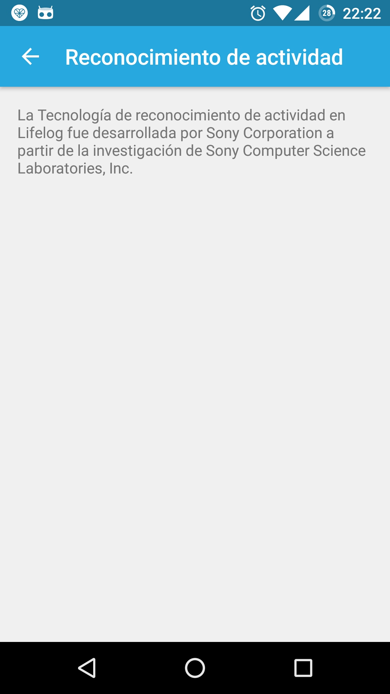

¿Qué es HARDroid?¶
HARDroid¶
HARDroid es un proyecto Open Source que tiene como objetivo tener una implementación abierta del servicio de reconocimiento de actividades físicas utilizando sensores del celular.
Nuestro proyecto implementa el concepto de desacomplamiento de una Librería API y una APK de servicio que provee la funcionalidad de reconocimiento de actividades físicas.
La idea nace de dos (2) productos similares de Google y Sony que realizan reconocimiento de actividades los cuales son Google Play Services y Sony LifeLog.
Google Play Services¶
Google dispone del producto Google Play Services que proporciona dentro de una APK la implementación de algoritmos, y además los desarrolladores de aplicaciones Android pueden integrarse (a través de una API) a varias funcionalidades utilitarias en las siguientes dimensiones:
- Location & Context
- Provee funcionalidades para mejorar la precisión y calidad de la ubicación GPS del celular basado en sensores. Además, la función contexto provee la capacidad de reconocer las actividades físicas
- Ads
- Provee funcionalidades para ofrecer publicidad in la aplicación
- Games
- Provee funcionalidades para Gamificar la aplicación
- Cloud Messaging
- Provee funcionalidades para mensajería a travéz de Internet.

Sony LifeLog¶
Sony dispone de un producto registrar las actividades diarias de las personas por medio de sensores del celular o por medio de las relojes smartwatch. Para esto proveen una aplicación de rastreo de actividades diarias con un reconocedor de actividades propio.
| Inicio LifeLog | Configuración | Acerca del Reconocedor |
|---|---|---|
 |
 |
 |
{kind=link}